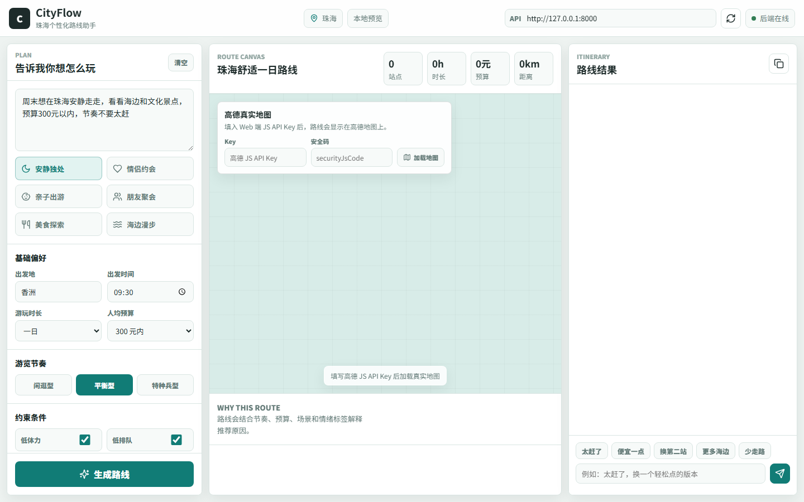
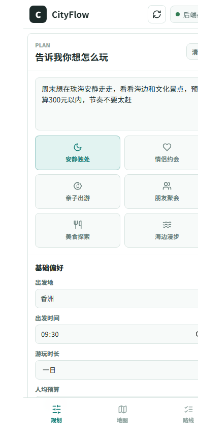

包里有什么
frontend/：可运行的新前端。frontend/dev_backend.py：本地联调真实 V2 后端路由的启动入口。starter/：Windows 一键启动脚本。docs/assets/：桌面端和移动端截图。SEND_TO_PARTNER.txt：可以直接发给伙伴的说明文字。
对方需要准备
- Python 3.12 或可运行 FastAPI/uvicorn 的 Python 环境。
- 如果要联调真实后端，需要把
hks-meituan-master放在本包同级或上一级目录。 - 高德 Web 端 JS API Key 和
securityJsCode。
只看前端
- 进入
frontend/。 - 启动静态服务。
python -m http.server 5174 --bind 127.0.0.1打开 http://127.0.0.1:5174/。如果后端没启动，页面会用本地 POI 数据生成预览路线。
联调真实后端
- 确认
hks-meituan-master与本包在相邻目录。 - 进入
frontend/。 - 启动 V2 开发后端。
python -m uvicorn dev_backend:app --host 127.0.0.1 --port 8000前端默认连接 http://127.0.0.1:8000，页面顶部会显示“后端在线”。
高德地图使用方式
打开页面后，中间地图区会出现“高德真实地图”配置框。填入高德 Web 端 JS API Key 和 securityJsCode 后点击“加载地图”，路线点位会渲染为真实高德地图上的折线和编号站点。
Key 和安全码不会写死在项目文件里，只保存在当前浏览器 localStorage，便于演示和联调。
界面截图
网页版

移动端
